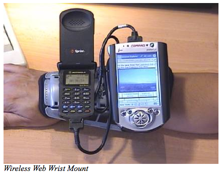

web1995:
Strong Arm Wrist-top Platform
By Cliff Thompson
But, here it is, the year 2002 and I’m still waiting for my wrist-mounted, combination web-enabled cell-phone/palmtop/digital video device to appear on the shopping channel! I wonder…how close to these wonderful science fiction visions can I get with today’s technology and a little ingenuity?